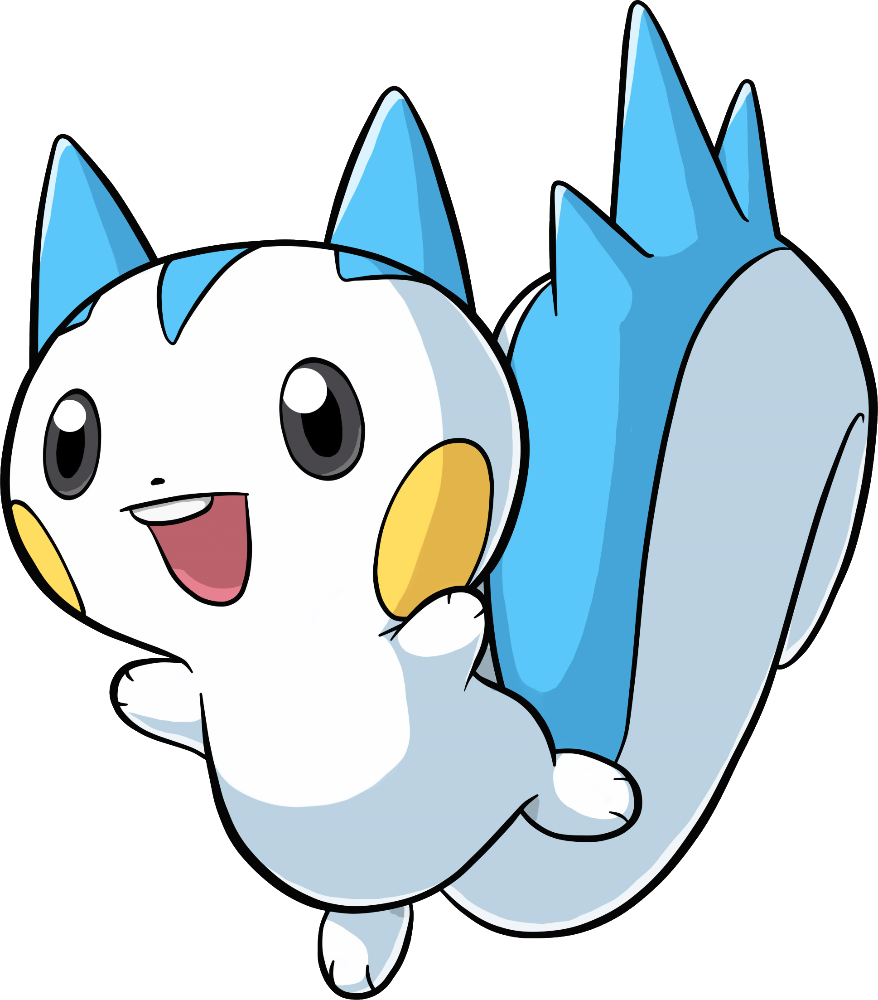

DROPANIME
Home
Loja
Sobre nós
Contato
Bem-vindo ao mundo digital das moedas
DROPS
digitais versão anime
Descubra muitas modalidades diferentes de DROPS e ganhe diferentes moedas DROPS para trocar em diversas conquistas sobre animes!
Descubra
Jogue e se diverta com nossos
PUPS
digitais decorados!
Os PUPS ajudam na montagem de elenco para os DROPS, em descontos de DROPS e figurinhas de animes
Saiba Mais
Características
Jogue para ganhar
Escolha as melhores cartas, jogue com paciência e com inteligência para ganhar os DROPS, você poderá escolher apenas 3 carta por rodada e terá apenas 1 volta.
PIKACHU
Ele evolui de Pichu quando nivelado com alta amizade e evolui para Raichu quando exposto a uma Pedra do Trovão.

PACHIRISU
Junto com Starly e Munchlax, Pachirisu é um dos três Pokémon Parceiros de Almia disponíveis no início de Pokémon Ranger: Shadows of Almia.
SQUIRTLE
Ele evolui para Wartortle a partir do nível 16, que evolui para Blastoise a partir do nível 36. Junto com Bulbasaur e Charmander, Squirtle é um dos três primeiros Pokémon parceiros de Kanto disponíveis no início de Pokémon Red, Green, Blue, FireRed e LeafGreen.
OSHAWOTT
Ele evolui para Dewott a partir do nível 17, que evolui para Samurott a partir do nível 36. Em Hisui, ele evolui para Dewott a partir do nível 17, que evolui para Hisuian Samurott a partir do nível 36. Junto com Snivy e Tepig, Oshawott é um dos três primeiros Pokémon parceiros de Unova disponíveis no início de Pokémon Black, White, Black 2 e White 2. Oshawott também é um dos três primeiros Pokémon parceiros de Hisui em Pokémon Legends: Arceus, ao lado de Rowlet e Cyndaquil.
CHARMANDER
Ele evolui para Charmeleon a partir do nível 16, que evolui para Charizard a partir do nível 36. Junto com Bulbasaur e Squirtle, Charmander é um dos três primeiros Pokémon parceiros de Kanto disponíveis no início de Pokémon Red, Green, Blue, FireRed e LeafGreen.
TOGEPI
Ele evolui para Togetic quando sobe de nível com alta amizade, que evolui para Togekiss quando exposto a uma Shiny Stone.